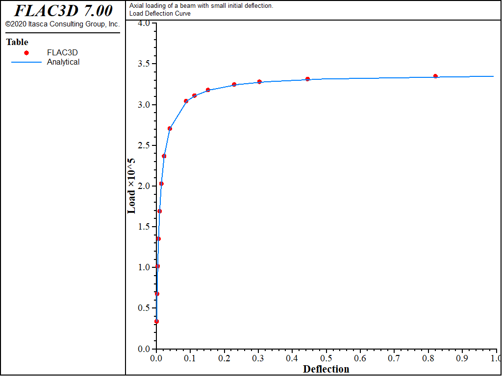

轴压梁的屈曲
问题描述
注意
要在 FLAC3D 中查看该项目，请使用菜单命令 。选择 “Structure/Beam/AxialBuckling” 并选中 “AxialBuckling.f3prj” 载入。所用 主数据文件（main data files） 示于本例末尾。其余数据文件可在该项目中找到。
本例演示具有小初始挠度的轴压梁的屈曲行为。梁置于基础上，两端固定侧向平动。定义全局坐标系，\(z\) 轴向上、沿梁轴线，原点位于梁底。梁的初始形状由 Massonnet（1960）中的方程定义：
(1)\[x_0 = f_0 {\rm sin} \Bigl({{\pi z} \over {l}}\Bigr)\]
其中 \(l\) 为梁长度，\(f_0\) 为最大初始挠度。
梁在轴力 \(P\) 作用下产生的附加挠度由线性稳定分析按下式预测
(2)\[x - x_0 = {{ f_0 {\rm sin} ({{\pi z} \over{l}})} \over {{ {P_{cr}} \over {P}} - 1}}\]
其中 \(P_{cr}\) 为屈曲最小临界荷载。
最小临界荷载定义为
(3)\[P_{cr} = \pi^2 { {EI} \over {l^2}}\]
其中 \(E\) 为杨氏模量，\(I\) 为横向弯曲惯性矩。
于是梁中心的附加挠度 \(f\) 为
(4)\[f = { {f_0} \over { {P_{cr} / {P - 1} } }}\]
本例中梁长 200 m，初始挠度最大幅值为 1 cm（即梁长的 0.005%）。杨氏模量为 257 MPa，横向弯曲惯性矩为 5.333 m4。梁用 20 个单元建模，底部固定所有方向平动，顶部固定 \(x\) 与 \(y\) 方向平动。在梁顶逐级施加轴力直至达到临界荷载。每级之后循环至力学平衡，并把荷载-挠度记录到表格中。
如预期，随荷载趋近最小临界值，梁挠度增大到无法量测。解析解与数值预测的梁中心附加挠度对比示于 图 1（Figure 1）。可以看到两者吻合很好。


图 1：荷载-挠度曲线。
参考文献
Massonnet, C. E. Résistance Des Matériaux. Sciences Et Lettres, Liége (1960).
数据文件
AxialBuckling.dat
; 具有微小初始挠度的梁的轴向加载。
; 荷载与梁中点处附加挠度的关系：
model new
fish automatic-create off
model title "Axial loading of a beam with small initial deflection."
; 创建由二十个单元组成的梁，x 方向的初始挠度为正弦波形
fish define createBeam
local p2 = vector(0,0,0)
loop local z (10,200,10)
local p1 = p2
p2 = vector(0.01*math.sin(math.pi*z/200.),0,z)
command
struct beam create by-line [p1] [p2] id=1
end_command
end_loop
end
[createBeam]
; 设置参数和边界条件
model large-strain on
struct beam property young 2.57e8 cross-sectional-area 4 ...
direction-y (0,1,0) moi-y 5.33 moi-z 5.333 ...
moi-polar 0 poisson 0.3
struct node fix velocity range position-z 0
struct node fix velocity-x velocity-y range position-z 200
; 创建历史
struct node history displacement-x position (0,0,100)
struct node history displacement-y position (0,0,100)
; 在数据表中定义加载序列，以临界荷载的比例表示
table 'seq' add (1,.1) (2,.2) (3,.3) (4,.4) (5,.5) (6,.6) (7,.7) (8,.8) ...
(9,.9) (10,.92) (11,.94) (12,.96) (13,.97) (14,.98) (15,.99)
; 依次施加各级荷载，在平衡后记录挠度
fish define loadDeflection
local endNode = struct.node.near(0,0,200)
local midNode = struct.node.near(0,0,100)
local Pcr = (math.pi/200)^2 * 2.57e8 * 5.333
loop local i (1,table.size('seq'))
local load = table('seq',i) * Pcr
struct.node.apply(endNode,3) = -load
io.out('Loading step '+string(i))
command
model solve convergence 5e-4
end_command
local pos = struct.node.pos(midNode)
pos->z = 0
local deflect = math.mag(pos) - 0.01
local x = 0.01/(Pcr/load - 1)
table('def',deflect) = load
table('anal',x) = load
command
model save ['load'+string(load*100/Pcr)]
end_command
end_loop
end
[loadDeflection]
model save 'AxialBuckling'
⇐ Cantilever Beam with Applied Moment at Tip — Beam Elements | Plastic Hinge Formation in a Beam Structure ⇒
| 这些内容对您有帮助吗？… | FLAC3D © 2019, Itasca | 原文更新于 2020 年 10 月 8 日 |
| 版权与免责声明 | ||